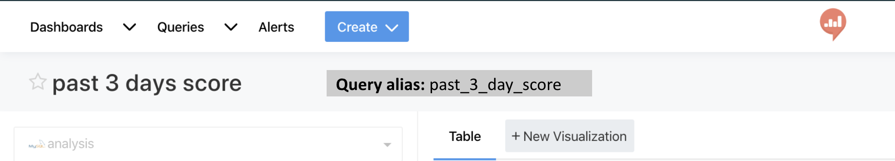
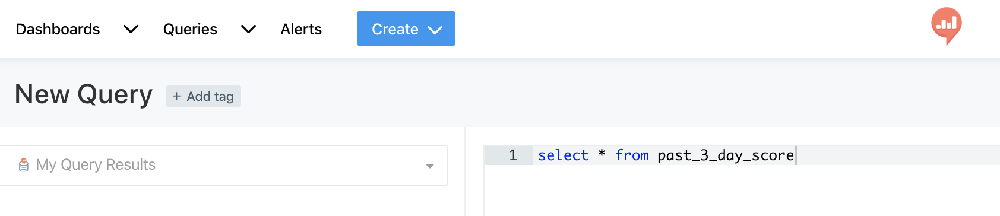

In a dashboard, you can use a URL formatted with a name reference to another dashboard along with parameters as a way to drill-down to more information.
It’s also possible to drill-down in a simple query, but it seems like you can only do it based upon the query-ID number. Is there a way to use the name of the query instead of the number so that it is more portable, and if so, what’s the trick? Or is the ‘name’ drill-down reference only available for dashboards?
This site is in read only mode. Please continue to browse, but replying, likes,
and other actions are disabled for now.
1 Like
We used slugs for URL identifier only for the dashboards…
I’m curious, in what way it’s more portable? Across different instances?
You could use my trick.
- Create snippet every time you create a query.
Example
Saved query name: Monthly Order
Saved query_id: 123456
Snippet
query_123456 monthly_order
The beauty of it, it also give your saved query Monthly Order an easy name to remember and recognized for your organizations in your another query referencing from Monthly Order
-
Don’t forget to turn on auto complete. Every time you want to query from Monthly Order using QRDS. You can just type SELECT * FROM monthl… and it will give you suggestion for the snippet that you just created
-
Automate the process, currently I am using the redash API to automatically create a new snippet whenever a new saved query created. Or update an existing snippet whenever a saved query updated (in case the owner changes the query name)
1 Like
in what way it’s more portable? Across different instances?
In my case, yes. I have three environments associated with different instances.
How about making query alias and use it?
Set query alias.

Use it without query_xxx.

Agree with Hiroga. By “more portable” I meant it’s portable across Redash instances that have the same schema but different dashboards, where you want a consistent way to create a dashboard on any instance regardless of the id.
1 Like